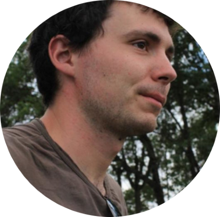
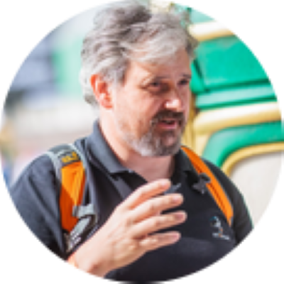
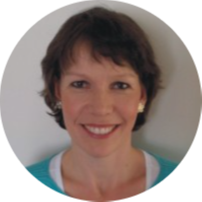
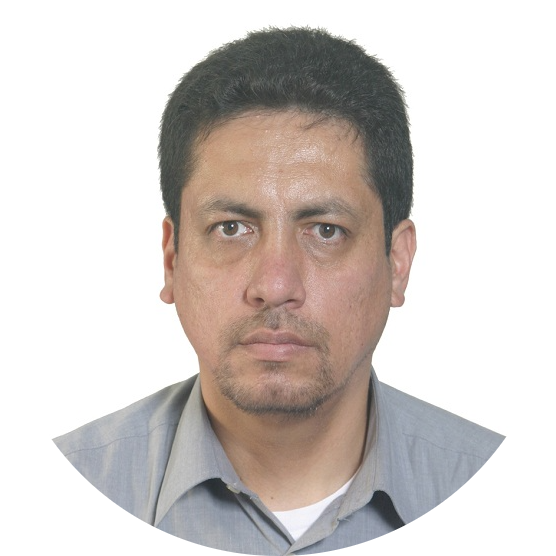
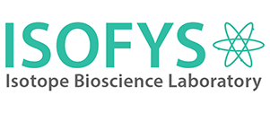

About the people involved
Primary investigator
 Wout Van Echelpoel is the main recipient of the MSCA fellowship and is employed by the research group Aquatic Ecology at Ghent University. He obtained his PhD in 2020 and subsequently worked on the T2021 report of the Scheldt estuary until 2023. He is (co-)author of over 20 scientific publications and multiple conference contributions. More information on projects, publications, and interests can be found here.
Promoters
 Peter Goethals is head of the research group Aquatic Ecology at Ghent University and currently acts as (co-)promoter of about 20 PhD students. He has supervised over 40 PhD students and is (co-)author of over 200 scientific publications. His current research interests lie in the management of multifunctional aquatic systems. More information can be found here.
 Henrietta Hampel is head of the Laboratorio de Ecología Acuática at the University of Cuenca. She has a background in biology and is (co-)author of more than 45 articles published in international peer-reviewed journals. Her current research interests lie in the limnology of tropical high-mountain lakes and ecosystem health, including the structure and functioning of high-mountain rivers.
Associated researchers and research groups
 Raúl Vazquez is a senior member of the Laboratorio de Ecología Acuática at the University of Cuenca. He is experienced in hydrological processes and process-based modelling (use of MIKE SHE, SWAT, Modflow, Groundwater Vistas, etc.). His current research interests include water resources engineering, limnology of tropical high-mountain lakes, remote sensing and GIS, and water resources modelling
Rubén Jerves is a senior researcher of the Programa para el manejo del agua y del suelo (PROMAS) at the University of Cuenca. He has obtained his PhD at the research group Aquatic Ecology at Ghent University and participated in various international research projects. He is (co-)author of more than 30 articles published in international peer-reviewed journals.
 The Isotope Bioscience Laboratory (ISOFYS) at Ghent University carries out international oriented research on isotope biogeochemistry, climate change mitigation and adaptation, and integrated tropical soil fertility. Doing so, ISOFYS contributes to a process-based understanding of ecosystem functions. More information can be found here.
The Sustainable Agroecosystem Group (SAE) at ETH Zürich is an international multidisciplinary group committed to playing a role in bringing healthy food from fields to tables around the world for generations to come. They focus on how carbon and nitrogen cycling is affected by management and driven by the interactions between plants, soil structure, and soil biota. More information can be found here.
Field and sample processing support
Many people have been helping out during the collection of data in the field and the subsequent lab processing. Trying to be as complete as possible (though let us know if you think you belong on the following overview):
- D.V. Tigre Remache: Sample processing during Campaign #7
- M.E. Carpio Moreno: Sample processing during Campaign #7
- R.M. Perez Sucuzhañay: Sample processing during Campaign #7
- D.M. Siguencia Calle: Data collection and sample processing during Campaign #6
- D.J. Vimos Lojano: Data collection during Campaign #6
- M.K. Segura Paima: Data collection and sample processing during Campaign #5
- L.E. Sumba Sumba: Data collection and sample processing during Campaign #5
- D.M. Siguencia Calle: Data collection and sample processing during Campaign #5
- N.I. Guambaña Palaguachi: Sample processing during Campaign #5
- S. Gutierrez: Sample processing during Campaign #5
- D.J. Vimos Lojano: Data collection during Campaign #4
- K.P. Ramirez Pozo: Data collection and sample processing during Campaigns #2 - #4, #7
- C.X. Lopez Solis: Data collection and sample processing during Campaign #3
- C.F. Sanchez Cabrera: Data collection and sample processing during Campaign #1
- E.G. Malla Aguilar: Data collection and sample processing during Campaign #1
- D.G. Panique Casso: Data collection and sample processing during Campaign #1
- P.V. Mosquera: Data collection and sample processing during Campaign #1
- K.P. Chavez Loja: Data collection and sample processing during Campaign #1
- P.N. Abad Merchán: Data collection and sample processing during Campaign #1
- M.J. Gallegos Ochoa: Data collection and sample processing during Campaign #1
- L.T. Ho: Gas sampling instructions and data collection during Campaign #1
- D.G. Zuñiga Villegas: Providing transport during Campaigns #1 - #7